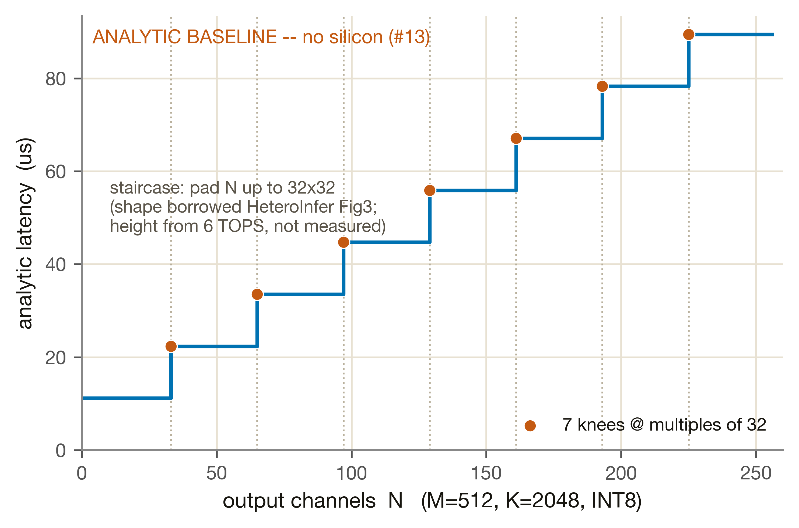
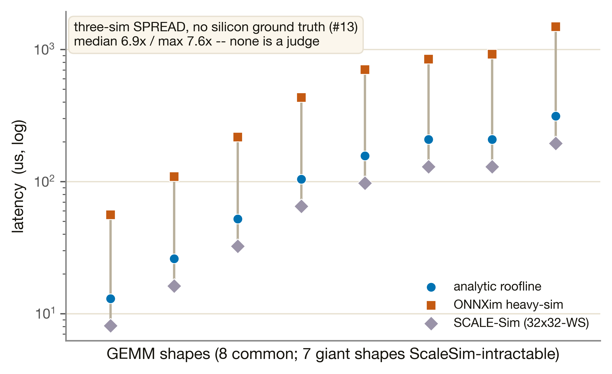
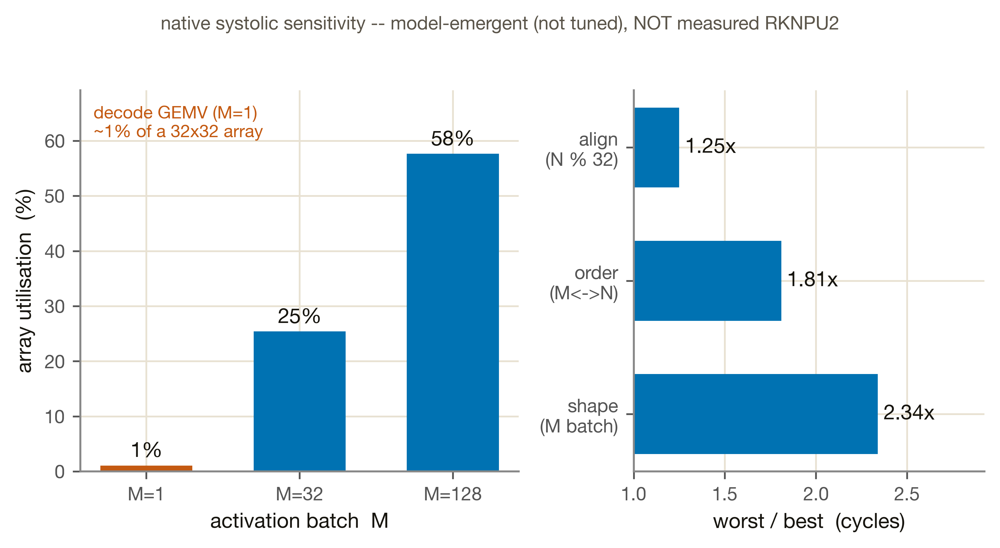

RKNPU2 NPU 單元（無矽，#13）
這是全站誠實度最高、也最脆弱的一頁。RKNPU2 的基本功能是「systolic array 上的 matmul」，我們以解析 systolic-roofline 建模——但 Phase 1 完全沒有 RKNPU2 silicon（aetina 板離線，issue #13）。本頁所有數字都是解析基線或模擬，沒有一個校準到矽晶。三個引擎（解析 / ONNXim / ScaleSim）只是一個不確定性帶（median ~6.9×），沒有任何裁判。
M4-NPU 把 RKNPU2 當成一個 weight-stationary systolic-array 加速器來建模——它的基本功能就是「在固定大小方陣上做 matmul」，所以我們用解析 systolic-roofline（padded MACs + order/shape factor + BW ceiling）算延遲。硬體：RK3588 內建 NPU，3 核、~1 GHz、datasheet 6 TOPS INT8，dtype 限 INT4/8/16 + FP16。
關鍵誠實邊界：沒有 RKNPU2 silicon。aetina 板在 Phase 0.3 量測期間離線（#13），RKNPU2 的 matmul/attention micro-benchmark 從未採集（measurements/aetina/rknpu2_matmul.json 不存在）。因此 calibrated chip 刻意是熄滅的——這是誠實的視覺，不是疏漏。systolic 32×32 與 BW 帶都借自 HeteroInfer（SOSP'25），6 TOPS 是 datasheet 名目值；無一 fit 到本矽。也無 power telemetry，本頁不報任何 energy 數字。
本節不是「量測」。正常單元在這裡放矽晶量測；M4-NPU 沒有矽可量——measured chip 因此熄滅。我們能交付的只有一個解析基線：把 INT8 GEMM（M×K×N）模成三個 ceiling 取最大——padded compute（6 TOPS）、weight stream（BW）、dispatch floor。其中形狀借自 HeteroInfer 的 systolic 特性，絕對值未經任何矽晶驗證。
最能代表這個基線的是 32×32 對齊階梯：systolic array 是固定的 32×32 方陣，任何不整除 32 的維度都要補滿一整排／列，那些補出來的 MAC 是浪費。掃 compute-bound 形狀（M=512, K=2048, N=1…256）：

Native attention（attn_bmm）另走純 compute-bound 路徑（activation×activation，無靜態權重可 stall、無 order/shape 懲罰）。GQA heads（=8）走 batch 維、不補進 systolic M 槽（否則把 heads 補到 32 會 4× 高估 MACs）；只有 hd、kv 被 pad 到 32 倍數。同樣是解析估計，無矽。
每個參數都不是校準值——這正是本頁要講清楚的事。下表把每個數字的來源標籤攤開：
| 參數 | 值 | 來源 / 誠實標籤 |
|---|---|---|
| 6 TOPS INT8 ceiling | 6.0 | assumption：datasheet 峰值，非量測 |
| systolic_dim | 32×32 | borrowed：Hexagon（HeteroInfer Fig3）——階梯的 quantum |
| order/shape max | 6× | borrowed：寬 activation 破壞 weight-stall，HeteroInfer Fig4 量到的上限 |
| eff_BW (low / high) | 20.1 / 22.4 GB/s | borrowed：34 GB/s host × Fig5 的 59–66%（分母=68，非 34） |
| cores · freq | 3 · ~1 GHz | datasheet（cores=measured-spec、freq=assumption） |
| dispatch floor | 2.0 µs | assumption：固定 per-op 名目值（無矽） |
| 能耗 | 不可判 | 無 RKNPU2 power telemetry |
本節是這一頁的重心。因為沒有矽晶基準，我們無法「驗證」解析基線；能做的只有把不同模擬器擺在一起，看它們彼此差多少——這是不確定性帶（spread），不是 parity、不是「對齊」。三個引擎：(1) 解析 systolic-roofline（§1/§2）、(2) ONNXim（POSTECH cycle-level，engine='onnxim'）、(3) ScaleSim（SCALE-Sim v2，32×32 weight-stationary，Phase 1.6 建，engine='scalesim'；單一陣列的 cycles ÷3 核聚合到同 ~6 TOPS 基準——÷3 是「理想線性 3-core scaling」假設，三方對稱套用）。三個都是 sim、無一是裁判。

~6.9× 三方發散怎麼解讀（不是誰對誰錯）：解析 roofline 把 systolic 的 fill/drain、NoC、DRAM scheduling 抽象掉，偏樂觀；ONNXim 把這些 cycle-level 開銷算進去，偏高；ScaleSim 走自己的 systolic mapping，落在另一端。趨勢方向一致，但因三邊都無矽晶基準，這個發散的來源無法從外部定責。第三個 sim 不會讓任何值更可信——它只是 surface 更多不確定性，這正是 #13 無矽的代價，不是缺陷。
模擬器的價值不只給一個延遲數字，而是忠實重現架構的「原生行為」。把 ScaleSim 配成通用 32×32 weight-stationary 陣列後，脈動陣列的三個原生特性自己長出來（我們沒有替使用者套用「轉置進好 regime」的優化——那是 HeteroInfer 做的事）。下圖攤開這些代價：

本頁不存在任何數值校準結果。原 Phase 1.2 計劃要求 per-op median ≤10%、p95 ≤20%（對 RKNPU2 silicon 的誤差 gate）。這個 gate 沒有達成、也永遠不會在 Phase 1 達成——因為沒有矽。狀態記為 superseded-not-satisfied：解析 trend-shape 模型取代（supersedes）它成為交付物，但沒有達成（not satisfied）那個 silicon gate。
| 指標 | 門檻 | 狀態 |
|---|---|---|
| per-op median 誤差 | ≤ 10% | ⚠ superseded-not-satisfied（無矽，未達成） |
| per-op p95 誤差 | ≤ 20% | ⚠ superseded-not-satisfied（無矽，未達成） |
唯一的「驗收」是 trend-shape 勾稽——三條形狀對得上借來的 HeteroInfer 趨勢，全部標 simulated，無一是數值 gate：
| 檢查 | 結果 | 標籤 |
|---|---|---|
| (a) Fig3 階梯：knee 對齊借來的 32×32（7 knees，單調不減） | 形狀吻合 | simulated（非校準） |
| (b) Fig4 order/shape factor ≤ 6×（飽和於借來上限） | 形狀吻合 | simulated（非校準） |
| (c) Fig5 BW 分率 59–66%（分母=68 GB/s） | 落在帶內 | simulated/borrowed |
interface-ready，但數值不可信。NpuModel(spec, engine='analytic'|'onnxim'|'scalesim') 實作了凍結的 predict(wl) → {latency_us, bound, provenance} 介面，與 M1/M2/M4-CPU+GPU 同一合約，Phase 2 可直接在 engine= 槽切換三個 sim。但任何包含 NPU 路徑的整機輸出，provenance 必須傳播 simulated (RKNPU2, no silicon, #13) 標籤。
| 項目 | 狀態 |
|---|---|
NpuModel 凍結介面（analytic / onnxim 同合約） | ✅ interface-ready |
| RKNPU2 silicon 校準（#13） | ⚠ superseded-not-satisfied（板離線，micro-benchmark 未採集） |
| NPU 絕對延遲 | ⚠ 未驗證——只能當趨勢方向，不可信為數值 |
| 三方模型 spread（median ~6.9×） | ⚠ 已記錄、無法定責（三邊皆無矽基準） |
| NPU primary L4 裁決 | ⚠ 延到 Phase 2 L4（需 silicon 或外部基準才能定責 spread） |
| ScaleSim 第三引擎（Phase 1.6 已建） | ⚠ 已建、仍 simulated：三方多一條線、仍無裁判（巨型 shape 略過） |
| 能耗 | ⚠ 不可判（無 power telemetry） |
silicon 升級路徑：若 aetina 板回線、measurements/aetina/rknpu2_matmul.json 補上，只需把 engine 換成 'calibrated'、從 JSON fit 參數（比照 M4-GPU 的 gpu_mali_g610 方式），合約即可從 SIMULATED 升格——Phase 2 不需動介面。在那之前，NPU 是 Phase 2 integration 裡傳播不確定性、且無矽錨點可修正的高風險路徑。
- 解析 trend-shape：
validation/reports/phase1.2/m4_npu.json › trend_conditions / upgrade.issue_13_silicon - ONNXim sim-vs-sim spread：
validation/reports/phase1.3/m4_npu_onnxim.json › per_shape / median_abs_delta_pct / max_abs_delta_pct - 解析參數 / 來源標籤：
simulator/specs/npu_rknpu2.json › tops_int8, systolic_dim, bw_GBs, provenance - 模型實作 / 凍結介面：
simulator/models/m4_npu.py › NpuModel.predict（engine='analytic'|'onnxim'） - ONNXim 配置：
tools/onnxim/rknpu2_approx.json；快取輸出simulated/onnxim/rknpu2_sim_matmul.json - 合約 / gate 狀態：
validation/contracts/m4_npu.yaml › status=SIMULATED, no_numeric_gate, superseded_gate - silicon 缺席：
measurements/aetina/rknpu2_matmul.json（NOT collected，issue #13，板離線） - ScaleSim 三方 spread + 原生 sensitivity：
validation/reports/phase1.6/npu_scalesim.json › three_way_subset / native_sensitivity / skipped_shapes；drivertools/scalesim/run_rknpu2_scalesim.py、分析tools/analysis/fit_npu_scalesim.py；快取simulated/scalesim/rknpu2_sim_matmul.json